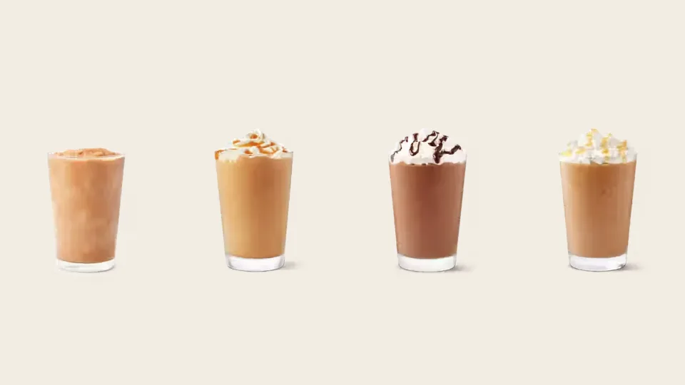

Unofficial fan guide - not affiliated with Tim Hortons
Tim Hortons' Iced Capp and Starbucks' Frappuccino compared on price, calories, sugar, caffeine, texture and flavours, with a quick guide to which to order.
Full Menu / Blog / Iced Capp vs Frappuccino

The Tim Hortons Iced Capp is cheaper and creamier. The Starbucks Frappuccino is lighter and much easier to customize. A medium Original Iced Capp costs $3.79 CAD and has about 330 calories. A Grande Coffee Frappuccino has 230 calories, and a Grande Caramel Frappuccino costs about $6.35 to $7.85.
The main difference is the dairy. An Iced Capp is blended with cream, and a Frappuccino is blended with milk. That one choice explains most of the gap in texture, calories and fat. The table compares the classic orders at each chain.
| Original Iced Capp (medium) | Coffee Frappuccino (Grande) | Caramel Frappuccino (Grande) | |
|---|---|---|---|
| Chain | Tim Hortons | Starbucks | Starbucks |
| Price (Canada) | $3.79 | Not tracked | About $6.35-$7.85 |
| Calories | About 330 | 230 | 380 |
| Sugar | About 42 g | 45 g | 54 g |
| Fat | About 16 g | 3 g | 16 g |
| Caffeine | Not published (estimates around 140 mg) | 95 mg | 90 mg |
| Dairy | Cream | Whole milk | Whole milk |
| Topping by default | None | None | Whipped cream and caramel drizzle |
| On the menu since | 1999 | 1995 | n/a |
Starbucks figures are its published nutrition for a 16 fl oz Grande. Iced Capp nutrition is from third-party data based on the Canadian menu, because Tim Hortons' official guide could not be loaded for this comparison. Iced Capp prices are this site's Canadian reference prices, last checked September 26, 2026.
An Iced Capp is a frozen coffee blended with cream. A Frappuccino is a blended drink of ice, milk, coffee and a syrup base. Both are sweet, blended and served cold. They differ in what makes them creamy and in how much you can change them.
The Iced Capp starts with a ready-made liquid base of sugar, water and coffee extract. Staff blend it with cream and ice until it is thick and frosty. Tim Hortons describes it as a "blended frozen coffee beverage" made with its signature coffee and cream. The Original has no topping unless you ask for whipped topping. Because the creaminess comes from cream rather than a thickener, the Iced Capp tastes rich and smooth.
A Starbucks barista blends ice, milk, a pump of coffee or crème base syrup and, for coffee versions, Frappuccino Roast, an instant coffee made for blended drinks. The base syrup contains xanthan gum. It binds the ice and milk so the drink doesn't separate. Most flavoured versions then get whipped cream and a sauce drizzle. Starbucks makes the default with whole milk, and you can swap it for 2%, nonfat or a plant-based milk.
The Iced Capp is much cheaper, often about half the price. A medium Original Iced Capp is $3.79 in Canada, and a Grande Caramel Frappuccino runs about $6.35 to $7.85.
Here are the full Iced Capp prices: the Original is $3.29, $3.79 and $4.29 for a small, medium and large. Flavoured Iced Capps cost 70 cents more in each size, at $3.99 to $4.99. When Narcity tested both drinks in March 2024, the Iced Capp cost $3.77 and a customized Starbucks Coffee Frappuccino cost $7.51. Tims Rewards members can also redeem an Iced Capp for 800 points, which our ordering guide rates as one of the better uses of points.
A medium Iced Capp has more calories and fat than a plain Grande Coffee Frappuccino, but about the same amount of sugar. Flavoured Frappuccinos with whipped cream close the gap quickly.
The Iced Capp's extra calories come from cream. It has about 330 calories and 16 g of fat, against 230 calories and 3 g of fat in a Grande Coffee Frappuccino. Sugar is close: about 42 g in the medium Iced Capp and 45 g in the Frappuccino. Once you add toppings, the picture flips. A Grande Caramel Frappuccino with whipped cream has 380 calories, 16 g of fat and 54 g of sugar. On the Tims side, flavoured Iced Capps are heavier too. A Vanilla Iced Capp has 440 to 660 calories, depending on size.
The Iced Capp probably has more caffeine, but Tim Hortons doesn't publish an official figure for Canada. Third-party estimates put a medium Iced Capp at about 140 mg. Starbucks lists 95 mg for a Grande Coffee Frappuccino and 90 mg for a Grande Caramel Frappuccino.
Neither drink is strong next to brewed coffee. A medium Tims brewed coffee has about 205 mg, according to our coffee menu. If you want a bigger kick, add an espresso shot. Both chains will add one to a blended drink. At Tims, a single espresso is listed at $1.49 on its own, and the add-on price varies by store.
Taste comes down to whether you want rich and creamy or light and icy. The Iced Capp tastes like sweet coffee ice cream that's been melted down. A Frappuccino tastes more like a coffee slush with toppings.
The Iced Capp is smoother and creamier because of the cream, and it holds together well as it melts. A Frappuccino is icier and lighter. The xanthan gum keeps it thick at first, but some ice can settle at the bottom. Narcity's March 2024 taste test described the Iced Capp as "smooth and creamy". It found the Starbucks drink grainier, with ice chunks at the bottom.
Both drinks are sweet. Narcity's tester found the Iced Capp "extremely sweet" and the Starbucks version more balanced and coffee-forward. That makes sense, because Frappuccino Roast is a strong, dark instant coffee, while the Iced Capp's coffee flavour sits behind the cream and sugar. If you don't usually drink coffee, the Iced Capp is the easier drink to like. If you want to taste the coffee, order a Frappuccino with an extra shot. At Tims, a Mocha Iced Capp or a cold brew is the more coffee-forward cold order.
The Frappuccino wins easily on choice. Starbucks offers more flavours, a coffee-free crème base, several milks, extra shots, syrups, sauces and toppings. Tim Hortons keeps a short Iced Capp menu and allows a few changes.
As of October 2026, the Canadian Iced Capp menu includes the Original, Vanilla, Mocha, Caramel Toffee, White Chocolate Pistachio, OREO Mocha and OREO Double Stuf. The Pumpkin Spice Iced Capp is on the menu until November 1, 2026. Limited-time flavours rotate through the year. Past ones include Maple (2016), S'mores (2017), and Salted Caramel and Pumpkin Spice (2018), and OREO has returned many times. Our summer drinks guide tracks each year's cold-drink lineup.
Starbucks sells Frappuccinos in two families. Coffee versions include the Coffee, Mocha, Caramel and Java Chip Frappuccinos. Crème versions, such as the Strawberry Crème and Vanilla Bean Crème, have no coffee, which makes them an option for kids or anyone avoiding caffeine. Tim Hortons has no coffee-free Iced Capp. Its closest coffee-free blended drinks are the Creamy Chill and the Frozen Quenchers.
The Frappuccino came first. Starbucks bought it in 1994 and launched it in 1995. Tim Hortons launched the Iced Capp in 1999.
The Frappuccino was created at the Coffee Connection, George Howell's Boston-area coffee chain, and was named by its marketing director, Andrew Frank. Starbucks gained the rights when it bought the chain in 1994. A bottled version followed in 1996 through a joint venture with PepsiCo, and Frappuccino sales passed $2 billion a year by 2012. Tim Hortons answered with the Iced Capp four years after the Frappuccino's launch. When it celebrated the Iced Capp's 20th anniversary in July 2019, a medium cost $2.99, and Tim Hortons COO Mike Hancock called it "the ultimate Canadian summer beverage". In 2025 the Original Iced Capp was Canada's most-ordered cold drink at Tims, according to the chain's year-end list.
Order the Iced Capp if you want a cheap, creamy treat in a drive-thru. Order a Frappuccino if you want control over the sugar, milk or caffeine. Use this checklist to decide:
For a fuller look at both chains, including brewed coffee, food and rewards, read our Tim Hortons vs Starbucks comparison.
To cut calories, size down and drop the toppings. Sizing down saves the most at both chains. A small Original Iced Capp has about 260 calories, compared with about 430 in a large.
At Tim Hortons, choose the Original over a flavoured Iced Capp, skip the whipped topping and ask for milk instead of cream if your restaurant will make it that way. At Starbucks, order a Tall (12 oz), ask for no whipped cream, choose nonfat milk and ask for fewer pumps of syrup. A Tall Coffee Frappuccino with nonfat milk is one of the lightest blended coffees at either chain.
No. Both are blended frozen coffee drinks, but an Iced Capp is made with cream and a pre-mixed coffee base, while a Frappuccino uses milk, Frappuccino Roast instant coffee and a syrup base. The Iced Capp is creamier, and the Frappuccino is icier and easier to customize.
The Iced Capp is Tim Hortons' version of a Frappuccino. It has been on the Canadian menu since 1999 and comes in Original and several flavours. Tims also sells Creamy Chills, such as the Vanilla Creamy Chill, which are blended but coffee-free.
"Capp" is short for cappuccino. The name suggests an iced cappuccino, but the drink has no espresso or steamed milk. It is a blended frozen coffee made with cream. Tims' hot cappuccino is a different drink.
No, not by that name. Iced Capp is a Tim Hortons trademark. The closest Starbucks order is a Coffee Frappuccino. Narcity's 2024 test added vanilla and brown sugar syrup to get closer to the Iced Capp's sweetness.
Not usually. A medium Original Iced Capp has about 330 calories and 16 g of fat because it's made with cream. A Grande Coffee Frappuccino has 230 calories and 3 g of fat. Flavoured Frappuccinos with whipped cream are a different story: a Grande Caramel Frappuccino has 380 calories.
The Original Iced Capp comes without whipped cream. You can ask for whipped topping, and some flavours come with it by default, such as the OREO Double Stuf, which gets vanilla-flavoured whipped topping.
Not reliably. The Iced Capp is built around cream, so ask your restaurant what it can substitute. A Starbucks Frappuccino can be ordered with oat, almond, soy or coconut milk, though some sauces and toppings may still contain dairy.
A Grande Frappuccino is 16 fl oz, a Tall is 12 fl oz and a Venti is 24 fl oz. Tim Hortons sells the Iced Capp in small, medium and large. A medium Iced Capp is the usual match for a Grande.
It's cheapest during summer promotions and through rewards. In June 2026, Tims ran a Monday deal of two medium Original Iced Capps for $6 at participating Canadian restaurants. Members can also redeem one for 800 Tims Rewards points.
Cold brew usually has more. Tim Hortons steeps its cold brew for 16 hours, and it isn't diluted with cream and sugar the way an Iced Capp is. See the Original Cold Brew for prices.
Yes. U.S. Tim Hortons restaurants sell Iced Capps too, and the U.S. menu has had its own limited flavours, such as the Chocolate Covered Strawberry Iced Capp in January 2025. Prices and nutrition differ from Canada.
This is an independent, unofficial guide. It is not affiliated with, endorsed by, or sponsored by Tim Hortons, Starbucks or Restaurant Brands International. Iced Capp prices are this site's Canadian reference figures; Iced Capp nutrition is from third-party data based on the Canadian menu and caffeine is an estimate, because Tim Hortons does not publish it. Starbucks figures are its published U.S. nutrition for a 16 fl oz Grande. Taste notes quote Narcity's March 2024 test; Frappuccino history is from Wikipedia and Iced Capp history from Tim Hortons' 2019 anniversary release. See Sources.